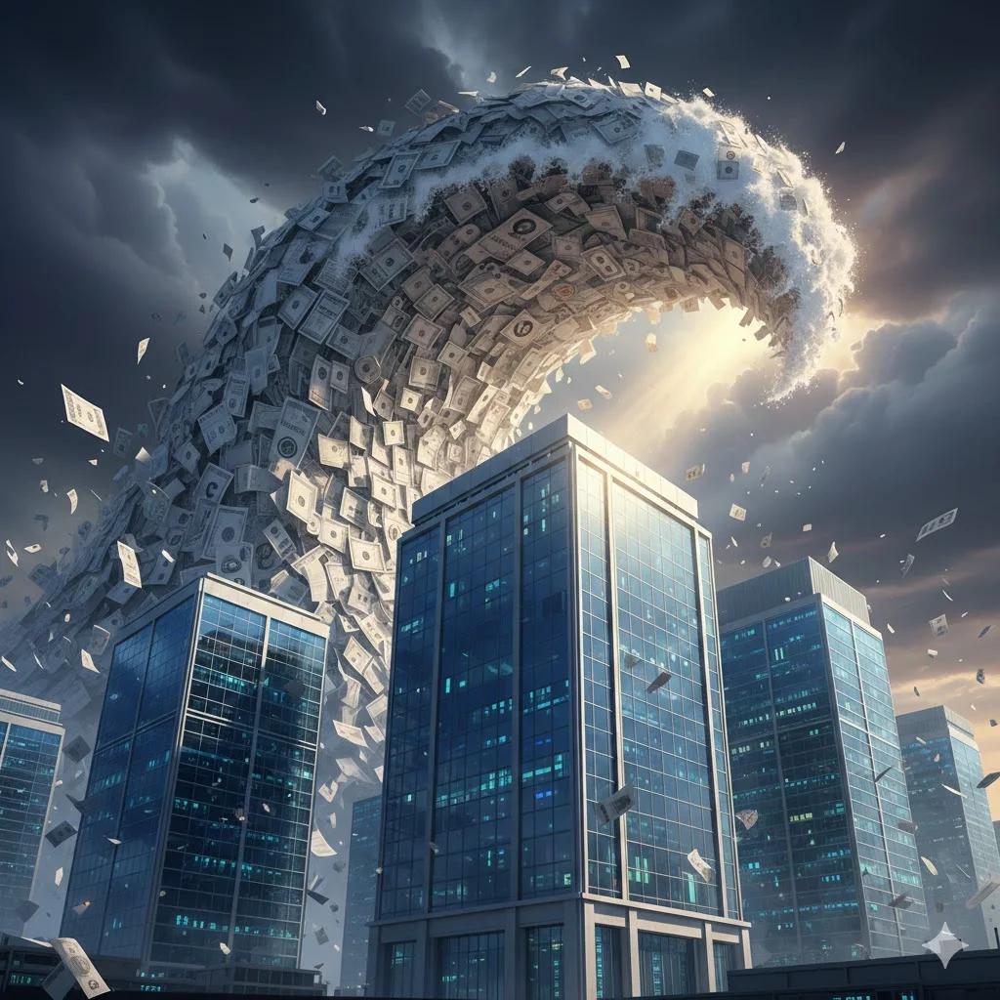

Alphabet is planning to issue a 100-year bond. Let that sink in for a moment. A company that didn’t exist 28 years ago is asking investors to lend it money until 2126.
The £1bn bond follows a large debt raise totaling $20 billion in US dollars, with maturities up to 40 years. The purpose is to fund Alphabet’s AI infrastructure investment: $175 to $185 billion in capital expenditures for 2026, roughly double the $91 billion it spent in 2025.
Let’s put the century time horizon in perspective, because I don’t think most people really internalize what “100 years” means for a corporation.
What the World Looked Like 100 Years Ago
In 1926, the dominant companies in America were U.S. Steel, General Electric, Standard Oil (already broken up but still enormous in fragments), AT&T, and General Motors. These were the hyperscalers of their day, sprawling industrial empires that seemed as permanent as the bedrock on which they built their factories.
How did that work out?
U.S. Steel was the world’s first billion-dollar corporation. Today, it has been acquired by Japan’s Nippon Steel for $14 billion, which is a rounding error in Alphabet’s capex budget. General Electric, once the most valuable company on the planet, spent years being dismembered and was finally broken into three pieces in 2024 after decades of decline. Standard Oil’s fragments evolved into ExxonMobil and Chevron. Still large, but operating in an industry that faces existential questions about its future. AT&T has been broken up, reconstituted, and broken up again, and is now worth less than it was in 2000.
General Motors went bankrupt in 2009.
The most powerful brand in America in the early twentieth century? Eastman Kodak. By the mid-1970s, Kodak controlled 90% of the US film market and 85% of camera sales. In 1996, it was still the fourth most valuable brand in the United States. Kodak filed for bankruptcy in 2012, destroyed by the very digital photography technology it invented but failed to commercialize.
If you’d asked anyone in 1926 which companies would still dominate in 2026, they would have named companies that mostly no longer exist, or exist in a form their founders wouldn’t recognize. The average lifespan of an S&P 500 company has dropped from 67 years in the 1920s to about 15 years today, according to research by Richard Foster at the Yale School of Management and corroborated by EY.
One hundred years is a very long time.
The Century Bond Track Record
Alphabet isn’t the first company bold enough to issue 100-year debt, and the history of prior issuers is... instructive.
Disney (1993): Issued $300 million in century bonds, promptly nicknamed “Sleeping Beauty bonds” by the financial press. Disney still exists, but its stock price today is roughly where it was a decade ago, and the company has spent recent years struggling between streaming losses and theme park dependence. The bonds were issued at a yield of 7.55%. Investors who held them through the subsequent three decades of rate changes experienced a wild ride.
Coca-Cola (1993): Also issued century bonds that same year. Coke is still around, still selling sugar water. However, the company’s revenue has grown only modestly in real terms since the mid-1990s. It’s a survivor, not a grower.
Ford Motor Company (1997): Issued century bonds, then nearly died. During the 2008 financial crisis, Ford’s century bonds traded at less than 15 cents on the dollar. They’ve since recovered, but investors who needed to sell during the crisis were devastated.
J.C. Penney (1997): Issued a century bond. Filed for bankruptcy in 2020, just 23 years in. The bond didn’t reach its quarter-life milestone.
Motorola (1997): This is particularly relevant because it’s the last technology company to issue a century bond before Alphabet. As Michael Burry pointed out in a well-timed post, 1997 was the last year Motorola was considered a major player. At the start of 1997, Motorola was a top-25 company by both market cap and revenue. Its brand was ranked the most valuable in the US, ahead of Microsoft. By 1998, Nokia had overtaken it in the cell phone market. After the iPhone launched, Motorola fell out of the consumer eye entirely. Today, it’s the 232nd-largest company by market capitalization, with $11 billion in sales.
The pattern is not subtle: century bonds tend to be issued at moments of peak corporate confidence, which often coincide with the beginning of decline. The very hubris required to say “we’ll be here in 100 years” is sometimes the signal that the end of an era is approaching.
It’s Not Just Alphabet
Alphabet’s century bond might be the most audacious symbol, but it’s just one data point in a debt binge that should make anyone with a sense of history deeply uncomfortable.
Amazonfiled a fresh shelf registration with the SEC on February 6 — four days ago — setting the stage for new bond issuances. This comes on top of the $15 billion it raised in November 2025, its first US dollar offering in three years. With $200 billion in capex guided for 2026, Amazon’s longest tranche stretched to 40 years at 5.55%. The company that once prided itself on being asset-light is now one of the largest borrowers in the investment-grade market.
Metaissued a record-breaking $30 billion bond in late 2025, attracting $125 billion in investor demand.
And then there’sOracle, which is the canary in this particular coal mine. Oracle is carrying roughly $100 billion in debt, with CDS spreads that soared to levels not seen since the 2008 financial crisis. Its stock has lost over 50% from its September 2025 peak, erasing roughly $460 billion in market value. Bondholders filed a class action suit in January, alleging Oracle knew it would need to raise significantly more debt than it disclosed when it sold $18 billion in bonds in September. Morgan Stanley slashed its price target from $320 to $213, warning that Oracle’s AI expansion leaves “little room for error” with cumulative capex potentially reaching $275 billion through fiscal 2028, pushing total debt past $400 billion.
Oracle’s free cash flow has become negative and is expected to remain negative through 2030. The company has nearly $250 billion in long-term data center leasing commitments with 15- to 20-year maturities, many of which it expects to sublease on shorter horizons. If demand falters, Oracle is left holding the debt long before the cash arrives.
The remarkable thing is that Oracle was forced to raise $25 billion in equity on top of $25 billion in bonds, a $50 billion total for 2026, precisely because the bond market alone wouldn’t stomach the risk. As Morgan Stanley’s CIO Lisa Shalett put it: “Every morning the opening screen on my Bloomberg is what’s going on with CDS spreads on Oracle debt.” She added that if people start getting worried about Oracle’s ability to pay, “that’s gonna be an early indication to us that people are getting nervous” about the entire AI trade.
The one notable exception?Microsoft. It’s the only hyperscaler that hasn’t tapped debt markets recently, despite spending $88 billion in capital expenditures in fiscal 2025 and operating at a capital intensity of 45% of revenue. Microsoft has instead leaned on off-balance-sheet structures like the BlackRock AI Infrastructure Partnership. Whether that’s financial prudence or just better PR is a question the bond market will eventually answer.
What This Really Says About Our Faith in Tech
Here’s where it gets interesting. Alphabet isn’t issuing this bond because it needs the money. It’s sitting on $127 billion in cash. It’s issuing it because it can, because UK pension funds and insurers are desperate for long-dated, high-quality paper, and because the AI arms race demands every possible funding channel to be tapped.
As one analyst put it: “the guy who underwrites it is probably not going to be the guy who’s there when it gets repaid.”
That’s not investing. That’s collective storytelling.
The century bond is the financial equivalent of the tech industry’s current narrative: that the companies building AI infrastructure today will be as essential to the 22nd century as electricity is to the 21st. That Google Search, or whatever replaces it, will still matter in 2126. That the moats built by $180 billion in annual capital expenditures are permanent.
But technology moats are not permanent. They never have been. IBM dominated computing for decades until the PC revolution made its mainframe business a legacy. Nokia owned mobile phones until it no longer did. Intel dominated semiconductors until TSMC and ARM overtook it. Each of these companies seemed as invulnerable in their era as Alphabet does today.
The honest answer is that nobody knows what computing, or Google’s role in it, will look like in 2126. Nobody knew in 1926 that vacuum tubes would give way to transistors, that mainframes would yield to PCs, that PCs would yield to smartphones, that smartphones might yield to whatever comes next. The rate of technological change is accelerating, not slowing. The idea that any single company will ride all of those waves for a century requires a kind of faith that history does not support.
The $600-Billion Dollar Question
The real question isn’t whether Alphabet will exist in 2126. The question is whether the AI infrastructure being built today with this borrowed money will generate returns that justify the investment. That’s a 5-10-year question, not a 100-year question. And on that time horizon, the jury is very much still out.
Big Tech is projected to spend between $635 billion and $665 billion on capital expenditures in 2026 alone. That money is flowing into data centers, GPUs, and AI training runs. The revenue to justify that investment hasn’t materialized at the necessary scale. Moody’s warned in January 2026 that capital spending on computing power is currently outpacing actual revenue growth from AI applications. Barclays forecasts that AI-related debt could represent 15-20% of most corporate bond indices, larger than the US banking sector component.
History rhymes. In the late 1990s, trillions of dollars flowed into telecommunications infrastructure. Much of that infrastructure ultimately proved useful (we all use fiber optic networks today), but the companies that built it mostly went bankrupt. The value accrued to the next generation of companies that built on the infrastructure, not to those that laid the pipe.
The Bottom Line
A 100-year bond issued by a 28-year-old tech company to fund AI infrastructure whose ROI remains unproven is not a rational financial instrument. It’s a cultural artifact. It indicates that, in February 2026, the market’s confidence in Big Tech is so absolute that investors will lend Google money on the assumption that it will outlast the vast majority of nation-states currently in existence.
The last tech company to make this bet was Motorola. It went from #1 brand in America to irrelevance within a decade. Oracle is already showing the cracks — stock halved, bondholders suing, CDS spreads at crisis levels, negative free cash flow for the next four years — and it hasn’t even finished building the data centers yet.
I’m not predicting Alphabet’s demise. The company prints cash at an extraordinary rate, and its competitive position in search, cloud, and AI is formidable. But a century is a long time. Longer than any tech company has ever existed. Longer than computing itself has existed. What does this say about our faith in Tech?
$1.5 trillion in projected hyperscaler debt over the next 5 years... There will be blood, and I don’t think we’ll have to wait 100 years to see it flow.
Julien